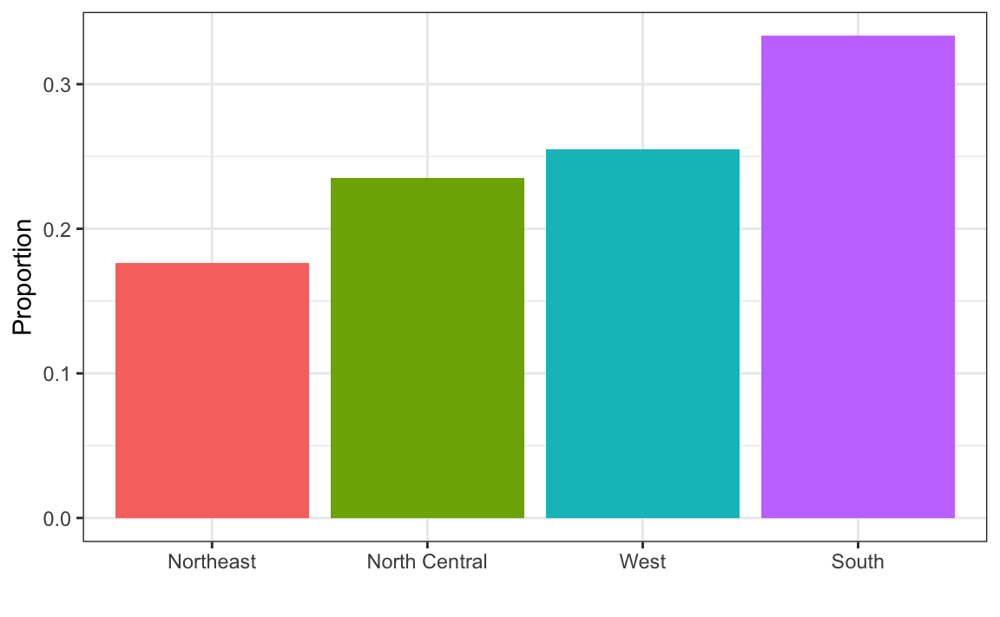
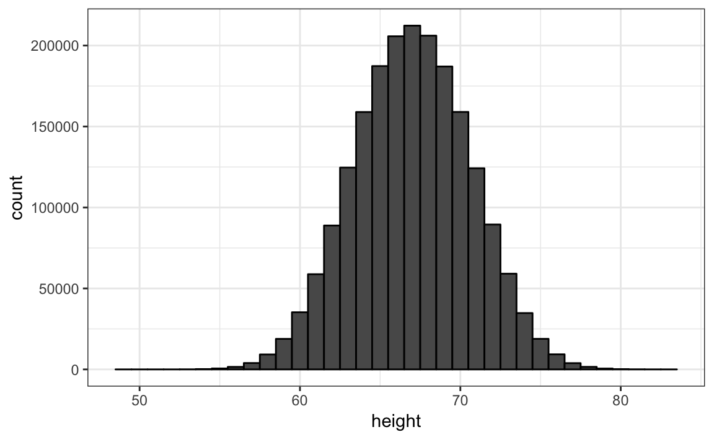
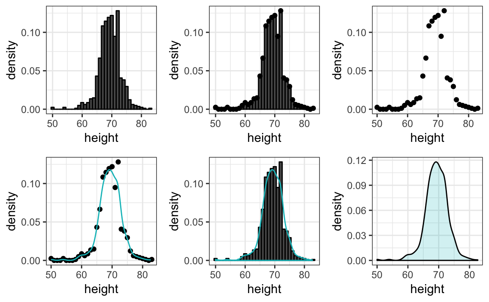
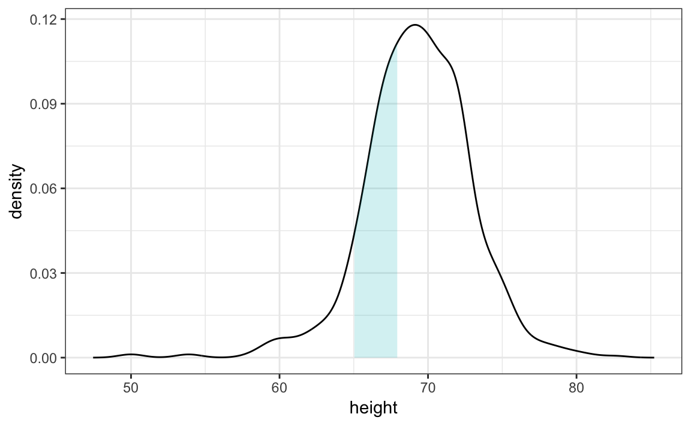
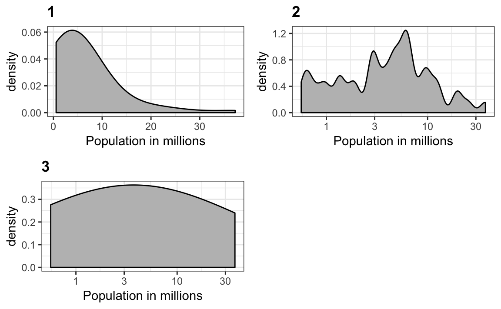

Chapter 16 Distributions
You may have noticed that numerical data is often summarized with the average value. For example, the quality of a high school is sometimes summarized with one number: the average score on a standardized test. Occasionally, a second number is reported: the standard deviation. So, for example, you might read a report stating that scores were 680 plus or minus 50 (the standard deviation). The report has summarized an entire vector of scores with with just two numbers. Is this appropriate? Is there any important piece of information that we are missing by only looking at this summary rather than the entire list?
Our first data visualization building block is learning to summarize lists of factors or numeric vectors. The most basic statistical summary of a list of objects or numbers is its distribution. Once a vector has been summarized as a distribution, there are several data visualization techniques to effectively relay this information.
16.1 Variable types
We will be working with two types of variables: categorical and numeric. Each can be divided into two other groups: categorical can be ordinal or not, whereas numerical variables can be discrete or continuous.
When each entry in a vector comes from one of a small number of groups, we refer to the data as categorical data. Two simple examples are sex (male or female) and regions (Northeast, South, North Central, West). Some categorical data can be ordered, for example spiciness (mild, medium, hot), even if they are not numbers per se. In statistics textbooks, they refer to these as ordinal data.
Example of numerical data are population sizes, murder rates, and heights. Some numerical data can be treated as ordered categorical. We can further divide numerical data into continuous and discrete. Continuous variables are those that can take any value, such as heights, if measured with enough precision. For example, a pair of twins may be 68.12 and 68.11 inches respectively. Counts, such as population sizes, are discrete because they have to be round numbers.
Keep in mind that all discrete numeric data can be considered ordinal. Although this is technically true, we usually reserve the term ordinal data for variables belonging to a small number of different groups, with each group having many members. In contrast, when we have many groups with few cases in each group, we typically refer to them as discrete numerical variables. So, for example, the number of packs of cigarettes a person smokes a day, rounded to the closest pack, would be considered ordinal, while the actual number of cigarettes would be considered a numerical variable. But, indeed, there are examples that can be considered both numerical and ordinal when it comes to visualizing data.
16.2 Case study: Student heights
Here we introduce a new motivating problem. It is an artificial one, but it will help us illustrate the concepts needed to understand distributions.
Pretend that we have to describe the heights of our classmates to ET, an extraterrestrial that has never seen humans. As a first step, we need to collect data. To do this, we ask students to report their heights in inches. We ask them to provide sex information because we know there are two different distributions. We collect the data and save it in a data frame:
library(dslabs)
data(heights)
head(heights)
#> sex height
#> 1 Male 75
#> 2 Male 70
#> 3 Male 68
#> 4 Male 74
#> 5 Male 61
#> 6 Female 65One way to convey the heights to ET is to simply send him this list of 1050 heights. But there are much more effective ways to convey this information and understanding the concept of a distribution will help. To simplify the explanation, we first focus on male heights.
16.3 Distribution function
It turns out that, in some cases, the average and the standard deviation are pretty much all we need to understand the data. We will learn data visualization techniques that will help us determine when this two number summary is appropriate. These same techniques will serve as an alternative for when two numbers are not enough.
The most basic statistical summary of a list of objects or numbers is its distribution. The simplest way to think of a distribution is as a compact description of a list with many entries. This concept should not be new for most of you. For example, with categorical data, the distribution simply describes the proportion of each unique category. The sex represented in the heights dataset is:
#>
#> Female Male
#> 0.227 0.773This two category frequency table is the simplest form of a distribution. We don’t really need to visualize it since one number describes everything we need to know: 23% are females and the rest are males. When there are more categories, then a simple barplot describes the distribution. Here is an example with the US state regions:

This particular plot is simply showing us four numbers: one for each category. We usually use barplots to display a few numbers. Although this particular plot, a graphical representation of a frequency table, does not provide much more insight than a table itself, it is a first example of how we convert a vector into a plot that succinctly summarizes all the information in the vector. Once the data is numerical, the task of displaying distributions is more challenging.
16.4 Cumulative distribution functions
Numerical data, that are not categorical, also have distributions. In general, when data is not categorical, reporting the frequency of each entry is not an effective summary since most entries are unique. In our case study, while several students reported a height of 68 inches, only one student reported a height of 68.503937007874 inches and only one student reported a height 68.8976377952756 inches. We assume that they converted from 174 and 175 centimeters respectively.
Statistics textbooks teach us that a more useful way to define a distribution for numeric data is to define a function that reports the proportion of the data below \(a\) for all possible values of \(a\). This function is called the cumulative distribution function (CDF). In statistics, the following notation is used:
\[ F(a) = \mbox{Pr}(x \leq a) \]
Here is a plot of \(F\) for the male height data:

Similar to what the frequency table does for categorical data, the CDF defines the distribution for numerical data. From the plot, we can see that 16% of the values are below 65, since \(F(66)=\) 0.164, or that 84% of the values are below 72, since \(F(72)=\) 0.841, etc.. In fact, we can report the proportion of values between any two heights, say \(a\) and \(b\), by computing \(F(b) - F(a)\). This means that if we send this plot above to ET, he will have all the information needed to reconstruct the entire list. Paraphrasing the expression “a picture is worth a thousands word”, in this case, a picture is as informative as 812 numbers.
A final note: because CDFs can be defined mathematically, as opposed to using data as we do here, the word empirical is added to distinguish and we use the term empirical CDF (ECDF) instead.
16.5 Histograms
Although the CDF concept is widely discussed in statistics textbooks, the plot is actually not very popular in practice. The main reason is that it does not easily convey characteristics of interest such as: at what value is the distribution centered? Is the distribution symmetric? What ranges contain 95% of the values? Histograms are much preferred because they greatly facilitate answering such questions. Histograms sacrifice just a bit of information to produce plots that are much easier to interpret.
The simplest way to make a histograms is to divide the span of our data into non-overlapping bins of the same size. Then, for each bin, we count the number of values that fall in that interval. The histogram plots these counts as bars with the base of the bar defined by the intervals. Here is the histogram for the height data splitting the range of values into one inch intervals: \([49.5, 50.5], [51.5,52.5],(53.5,54.5],...,(82.5,83.5]\)

As you can see in the figure above, a histogram is similar to a barplot, but it differs in that the x-axis is numerical, not categorical.
If we send this plot to ET, he will immediately learn some important properties about our data. First, the range of the data is from 50 to 84 with the majority (more than 95%) between 63 and 75 inches. Second, the heights are close to symmetric around 69 inches. Also, by adding up counts, ET could obtain a very good approximation of the proportion of the data in any interval. Therefore, the histogram above is not only easy to interpret, but also provides almost all the information contained in the raw list of 812 heights with about 30 bin counts.
So what information do we lose? Note that all values in each interval are treated the same when computing bin heights. So, for example, the histogram does not distinguish between 64, 64.1, and 64.2 inches. Given that these differences are almost unnoticeable to the eye, the practical implications are negligible and we were able to summarize the data to just 23 numbers.
16.6 Smoothed density
Smooth density plots are aesthetically more appealing than histograms. Here is what a smooth density plot looks like for our heights data:

In this plot, we no longer have sharp edges at the interval boundaries and many of the local peaks have been removed. Also, the scale of the y-axis changed from counts to density.
To understand the smooth densities, we have to understand estimates, a topic we don’t cover until a later chapter. However, we provide a heuristic explanation to help you understand the basics so you can use this useful data visualization tool.
The main new concept you must understand is that we assume that our list of observed values comes from a much larger list of unobserved values. In the case of heights, you can imagine that our list of 1050 students comes from a hypothetical list containing all the heights of all the students in all the world measured very precisely. Let’s say there are 1,000,000 of these. This list of values, like any list of values, has a distribution and this is really what we want to report to ET since it is much more general. Unfortunately, we don’t get to see it.
However, we make an assumption that helps us perhaps approximate it. Because we have 1,000,000 values, measured very precisely, we can make a histogram with very, very small bins. The assumption is that if we do this, consecutive bins will be similar. This is what we mean by smooth: we don’t have big jumps. Below we have a hypothetical histogram with bins of size 1:

The smaller we make the bins, the smoother the histogram gets. Here are the histograms with bin width of 1, 0.5 and 0.1:

The smooth density is basically the curve that goes through the top of the histogram bars when the bins are very, very small. To make the curve not depend on the hypothetical size of the hypothetical list, we compute the curve on frequencies rather than counts:

Now, back to reality. We don’t have millions of measurements. Instead, we have 812 and we can’t make a histogram with very small bins.
We therefore make a histogram, using bin sizes appropriate for our data and computing frequencies rather than counts, and we draw a smooth curve that goes through the tops of the histogram bars:

Remember that smooth is a relative term. We can actually control the smoothness of the curve that defines the smooth density through an option in the function that computes the smooth density. Here are two examples using different degrees of smoothness on the same histogram:
p1 <- heights %>%
filter(sex=="Male")%>% ggplot(aes(height)) +
geom_histogram(aes(y=..density..), binwidth = 1) +
geom_density(col="#00BFC4", adjust = 0.5)
p2 <- heights %>%
filter(sex=="Male") %>% ggplot(aes(height)) +
geom_histogram(aes(y=..density..), binwidth = 1) +
geom_density(col="#00BFC4", adjust = 2)
grid.arrange(p1,p2, ncol=2)
We need to make this choice with care as the resulting visualizations can change our interpretation of the data. We should select a degree of smoothness that we can defend as being representative of the underlying data. In the case of height, we really do have reason to believe that the proportion of people with similar heights should be the same. For example, the proportion that is 72 inches should be more similar to the proportion that is 71, than to the proportion that is 78 or 65. This implies that the curve should be pretty smooth; that is, more like the example on the right than on the left.
While the histogram is an assumption free summary, the smoothed density is based on some assumptions.
Interpreting the y-axis
Finally, we point out that interpreting the y-axis of a smooth density plot is not straightforward. It is scaled so that the area under the density curve adds up to 1. If you imagine we form a bin with a base 1 unit in length, the y-axis value tells us the proportion of values in that bin. But this is only true for bins of size 1. For other size intervals, the best way to determine the proportion of data in that interval is by computing the proportion of the total area contained in that interval. For example, here are the proportion of values between 65 and 68:

The proportion of this area is about 0.32, meaning that about that proportion is between 65 and 68 inches.
By understanding this we are ready to use the smooth density as a summary. For this dataset, we would feel quite comfortable with the smoothness assumption and, therefore, with sharing this aesthetically pleasing figure with ET, which he could use to understand our male heights data:

Densities permit stratification
As a final note, we point out that an advantage of smooth densities over histograms for visualization purposes is that densities makes it easier to compare two distributions. This is in large part because the jagged edges of the histogram add clutter. Here is an example comparing male and female heights:
heights %>%
ggplot(aes(height, fill=sex)) +
geom_density(alpha = 0.2)
With the right argument, ggplot automatically shades the intersecting region with a different color.
16.7 Exercises
In the murders dataset, the region is a categorical variable and the following is its distribution:

To the closet 5%, what proportion of the states are in the North Central region?
Which of the following is true:
A. The graph above is a histogram.
B. The graph above shows only four numbers with a bar plot.
C. Categories are not numbers so it does not make sense to graph the distribution.
D. The colors, not the height of the bars, describe the distribution.
The plot below shows the eCDF for male heights:

Based on the plot, what percentage of males are shorter than 75 inches?
A. 100%
B. 95%
C. 80%
D. 72 inches
To the closest inch, what height
mhas the property that 1/2 of the male students are taller thanmand 1/2 are shorter?A. 61 inches
B. 64 inches
C. 69 inches
D. 74 inches
Here is an eCDF of the murder rates across states:

Knowing that there are 51 states (counting DC) and based on this plot, how many states have murder rates larger than 10 per 100,000 people?
A. 1
B. 5
C. 10
D. 50
Based on the eCDF above, which of the following statements are true:
A. About half the states have murder rates above 7 per 100,000 and the other half below.
B. Most states have murder rates below 2 per 100,000.
C. All the states have murder rates above 2 per 100,000.
D. With the exception of 4 states, the murder rates are below 5 per 100,000.
Below is a histogram of male heights in our
heightsdataset:
Based on this plot, how many males are between 63.5 and 65.5?
A. 10
B. 24
C. 34
D. 100
About what percentage are shorter than 60 inches?
A. 1%
B. 10%
C. 25%
D. 50%
Based on the density plot below, about what proportion of US states have populations larger than 10 million?

A. 0.02
B. 0.15
C. 0.50
D. 0.55
Below are three density plots. Is it possible that they are from the same dataset?

Which of the following statements is true:
A. It is impossible that they are from the same dataset.
B. They are from the same dataset, but different due to code errors.
C. They are the same dataset, but the first and second undersmooth and the third oversmooths.
D. They are the same dataset, but the first is not in the log scale, the second undersmooths and the third oversmooths.
16.8 The normal distribution
Histograms and density plots provide excellent summaries of a distribution. But can we summarize even further? We often see the average and standard deviation used as summary statistics: a two number summary! To understand what these summaries are and why they are so widely used, we need to understand the normal distribution.
The normal distribution, also known as the bell curve and as the Gaussian distribution, is one of the most famous mathematical concepts in history. A reason for this is that approximately normal distributions occur in many situations, including gambling winnings, heights, weights, blood pressure, standardized test scores, and experimental measurement errors. There are explanations for this, but we describe these in a later chapter. Here we focus on how the normal distribution helps us summarize data.
Rather than using data, the normal distribution is defined with a mathematical formula. For any interval \((a,b)\), the proportion of values in that interval can be computed using this formula:
\[\mbox{Pr}(a < x < b) = \int_a^b \frac{1}{\sqrt{2\pi}s} \exp\left\{-\frac{1}{2}\left( \frac{x-m}{s} \right)^2\right\} \, dx\]
You don’t need to memorize or understand the details of the formula. But note that it is completely defined by just two parameters: \(m\) and \(s\). The rest of the symbols in the formula represent the interval ends that we determine, \(a\) and \(b\), and known mathematical constants \(\pi\) and \(\mathrm{e}\). These two parameters, \(m\) and \(s\), are referred to as the average, also called the mean, and the standard deviation (SD) of the distribution respectively.
The distribution is symmetric, centered at the average, and most values (about 95%) are within 2 SDs from the average. Here is what it looks like when the average is 0 and the SD is 1: 
The fact that the distribution is defined by just two parameters implies that if a dataset is approximated by a normal distribution, all the information needed to describe the distribution can be encoded in just two numbers: the average and the standard deviation, which we now define for an arbitrary list of numbers.
For a list of numbers contained in a vector x, the average is defined as:
average <- sum(x) / length(x)and the SD is defined as:
SD <- sqrt( sum( (x-mu)^2) / length(x))which can be interpreted as the average distance between values and their average.
Let’s compute the values for the height for males which we will store in the object \(x\):
index <- heights$sex=="Male"
x <- heights$height[index]The pre-built functions mean and sd (note that sd divides by length(x)-1 not length(x)) can be used here:
average <- mean(x)
SD <- sd(x)
c(average=average,SD=SD)
#> average SD
#> 69.31 3.61Here is a plot of the smooth density and the normal distribution with mean average = 69.315 and SD = 3.611:

It does appear to be quite a good approximation. We now will see how well this approximation works at predicting proportion of values within intervals.
16.9 Standardized units
For data that is approximately normally distributed, it is convenient to think in terms of standard units. The standard unit of a value tells us how many standard deviations away from the average it is. Specifically, for a value \(x\), we define it as \(z = (x-\mbox{average})/\mbox{SD}\). If you look back at the formula for the normal distribution, you see that what is being exponentiated is \(- z^/2\). The maximum of \(\exp{-z^2/2}\) is when \(z=0\), which explains why the maximum of the distribution is at the mean. It also explains the symmetry since \(- z^/2\) is symmetric around 0.
If we convert the normally distributed data to standard units, we can quickly know if, for example, a person is about average (\(z=0\)), one of the largest (\(z=2\)), one of the smallest (\(z=-2\)) or an extremely rare occurrence (\(z>3\) or \(z < -3\)). Remember that it does not matter what the original units are, these rules apply to data that is approximately normal.
In R, we can obtain standard units using the function scale:
z <- scale(x)Now to see how many men are within 2 SDs from the average, we simply type:
mean(abs(z) < 2)
#> [1] 0.95The proportion is about 95%, which is what the normal distribution predicts! To further confirm that, in fact, the approximation is a good one, we can use quantile-quantile plots.
16.10 Quantile-quantile QQ plots
A systematic way to assess how well the normal distribution fits the data is to check if the observed and predicted proportions match. In general, the approach of the QQ-plot is as follows:
- Define a series of proportions \(p=0.05,\dots .95\).
- For each \(p\), determine the value \(q\) so that the proportion of values in the data below \(q\) is \(p\). The \(q\)s are referred to as the quantiles.
To give a quick example, for the male heights data, we have that:
mean(x <= 69.5)
#> [1] 0.51550% are shorter or equal to 69 inches. This implies that if \(p=0.50\) then \(q=69.5\).
Now we define a series of \(p\):
p <- seq(0.05, 0.95, 0.05)If the quantiles for the data match the quantiles for the normal, then it must be because the data follows a normal distribution.
To obtain the quantiles from the data, we can use the quantile function like this:
observed_quantiles <- quantile(x, p)To obtain the theoretical normal distribution quantiles, with the corresponding average and SD, we use the qnorm function:
theoretical_quantiles <- qnorm( p, mean = mean(x), sd = sd(x))To see if they match or not, we plot them against each other and draw the identity line:
plot(theoretical_quantiles, observed_quantiles)
abline(0,1)
Notice that this code becomes much cleaner if we use standard units:
observed_quantiles <- quantile(z, p)
theoretical_quantiles <- qnorm(p)
plot(theoretical_quantiles, observed_quantiles)
abline(0,1)
16.11 Percentiles
Before we move on, let’s define some terms that are commonly used in exploratory data analysis.
Percentiles are special cases of quantiles that are commonly used. The percentiles are the quantiles you obtain when setting the \(p\) at \(0.01, 0.02, ..., 0.99\). We call, for example, the case of \(p=0.25\) the 25th percentile, which gives us a number for which 25% of the data is below. The most famous percentile is the 50th, also known as the median.
For the normal distribution the median and average are the same, but this is generally not the case.
Another special case that receives a name are the quartiles, which are obtained when setting \(p=0.25,0.50\), and \(0.75\).
16.12 Case study: Student heights (continued)
Using the histogram, density plots and qq-plots, we have become convinced that the male height data is well approximated with a normal distribution. In this case, we report back to ET a very succinct summary: male heights follow a normal distribution with an average of 69.315 inches and a SD of 3.611 inches. With this information, ET will have a good idea of what to expect when he meets our male students.
16.13 Boxplots
To introduce boxplots we will go back to the US murder data. Suppose we want to summarize the murder rate distribution. Using the data visualization technique we have learned, we can quickly see that the normal approximation does not apply here:

In this case, the histogram, or a smooth density plot, would serve as a relatively succinct summary.
Now suppose those used to receiving just two numbers as summaries ask us for a more compact summary.
Here Tukey offered some advice. Provide a five number summary composed of the range along with the quartiles (the 25th, 50th, and 75th percentiles). Tukey further suggested that we ignore outliers when computing the range and instead plot these as independent points. We provide a detailed explanation of outliers later in the chapter. Finally, he suggested we plot these numbers as a “box” with “whiskers”" like this:
with the box defined by the 25% and 75% percentile and the whiskers showing the range. The distance between these two is called the interquartile range. The two points are outliers according to Tukey’s definition. The median is shown with a horizontal line. Today, we call these boxplots.
From just this simple plot, we know that the median is about 2.5, that the distribution is not symmetric, and that the range is 0 to 5 for the great majority of states with two exceptions.
Boxplots are even more useful when we want to quickly compare two or more distributions. For example, here are the heights for men and women:
heights %>% ggplot(aes(x=sex, y=height, fill=sex)) +
geom_boxplot()
The plot immediately reveals that males are, on average, taller than females. The standard deviations appear to be similar.
16.14 Case study: Student heights (continued)
We have to give ET a full summary of our heights, but we have not yet summarized female heights. We expect that they will follow a normal distribution, just like males. However, exploratory plots reveal that the approximation is not as useful:

We see something we did not see for the males: the density plot has a second “bump”. Also, the qqplot shows that the highest points tend to be taller than expected by the normal distribution. Finally, we also see five points in the qqplot that suggest shorter than expected heights for a normal distribution. When reporting back to ET, we might need to provide a histogram rather than just the average and standard deviation for the female heights.
However, go back and read Tukey’s quote. We have noticed what we didn’t expect to see. If we look at other female height distributions, we do find that they are well approximated with a normal distribution. So why are our female students different? Is our class a requirement for the female basketball team? Are small proportions of females claiming to be taller than they are? Another, perhaps more likely, explanation is that in the form students used to enter their heights, FEMALE was the default sex and some males entered their heights, but forgot to change the sex variable. In any case, data visualization has helped discover a potential flaw in our data.
Regarding the five smallest values, note that these values are:
heights %>% filter(sex=="Female") %>% top_n(5, desc(height)) %>% .$height
#> [1] 51 53 55 52 52Because these are reported heights, a possibility is that the student meant to enter 5’1“, 5’2”, 5’3" or 5’5“.
16.15 Exercises
Define variables containing the heights of males and females like this:
library(dslabs) data(heights) male <- heights$height[heights$sex=="Male"] female <- heights$height[heights$sex=="Female"]How many measurements do we have for each?
Suppose we can’t make a plot and want to compare the distributions side by side. We can’t just list all the numbers. Instead, we will look at the percentiles. Create a five row table showing
female_percentilesandmale_percentileswith the 10th, 30th, 50th, …, 90th percentiles for each sex. Then create a data frame with these two as columns.Study the following boxplots showing population sizes by country:

Which continent has the country with the biggest population size?
What continent has the largest median population size?
What is median population size for Africa to the nearest million?
What proportion of countries in Europe have populations below 14 million?
A. 0.99
B. 0.75
C. 0.50
D. 0.25
If we use a log transformation, which continent shown above has the largest interquartile range?
Load the height data set and create a vector
xwith just the male heights:library(dslabs) data(heights) x <- heights$height[heights$sex=="Male"]What proportion of the data is between 69 and 72 inches (taller than 69, but shorter or equal to 72)? Hint: use a logical operator and
mean.Suppose all you know about the data is the average and the standard deviation. Use the normal approximation to estimate the proportion you just calculated. Hint: start by computing the average and standard deviation. Then use the
pnormfunction to predict the proportions.Notice that the approximation calculated in question two is very close to the exact calculation in the first question. Now perform the same task for more extreme values. Compare the exact calculation and the normal approximation for the interval (79,81]. How many times bigger is the actual proportion than the approximation?
Approximate the distribution of adult men in the world as normally distributed with an average of 69 inches and a standard deviation of 3 inches. Using this approximation, estimate the proportion of adult men that are 7 feet tall or taller, referred to as seven footers. Hint: use the
pnormfunction.There are about 1 billion men between the ages of 18 and 40 in the world. Use your answer to the previous question to estimate how many of these men (18-40 year olds) are seven feet tall or taller in the world?
There are about 10 National Basketball Association (NBA) players that are 7 feet tall or higher. Using the answer to the previous two questions, what proportion of the world’s 18 to 40 year old seven footers are in the NBA?
Repeat the calculations performed in the previous question for Lebron James’ height: 6 feet 8 inches. There are about 150 players that are that tall.
In answering the previous questions, we found that it is not at all rare for a seven footer to become an NBA player. What would be a fair critique of our calculations:
A. Practice and talent are what make a great basketball player, not height.
B. The normal approximation is not appropriate for heights.
C. As seen in question 3, the normal approximation tends to underestimate the extreme values. It’s possible that there are more seven footers than we predicted.
D. As seen in question 3, the normal approximation tends to overestimate the extreme values. It’s possible that there are less seven footers than we predicted.